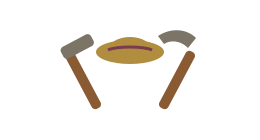

Capítulo 5
Mi familia
◆ ◆ ◆
"Mi mejor obra no se cuelga en la pared:
se sienta a mi mesa."
Mis hijos se llaman... y de cada uno les digo esto:
Una línea para cada uno: cómo es, qué le admiro, algún recuerdo suyo de chiquito.
El día que fui mamá / papá por primera vez sentí...
De mis nietos quiero decir...
Sus nombres, qué me hace reír de cada uno, qué les deseo.
Una tradición de nuestra familia que no se debe perder:
La comida del domingo, la posada, la visita al panteón, el rosario...
La receta de esta casa es... y el secreto está en...
Escríbala completa: ingredientes y modo. Que no se vaya con usted.

Capítulo 6
Mi trabajo
y mis manos
◆ ◆ ◆
"Todo lo que tengo
salió de estas dos manos y de Dios."
A lo que dediqué mi vida fue...
El oficio, el campo, la casa, el negocio; cómo empezó todo.
De lo que más orgulloso(a) estoy es...
Lo más difícil que me tocó vivir, y cómo salí adelante:
Para que mis nietos sepan que las tormentas también se pasan.
Mi consejo sobre el trabajo y el dinero:
Capítulo 7
Lo que aprendí
de la vida
◆ ◆ ◆
"Esto no viene en los libros:
viene en los años."
Mi dicho o refrán de cabecera es... porque...
Si pudiera platicar con el muchacho(a) que fui a los 20, le diría:
Para mí, la felicidad es...
De lo que no me arrepiento de nada es...
Mi fe, mi oración o mi deseo más grande para los míos:
Quiero que cuando piensen en mí, me recuerden así: